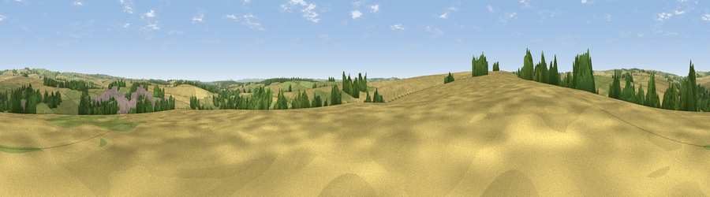

Viewpoint near Piddlehinton
#35253 in England · top 77% of its area beats it · near PiddlehintonWhere it is
The exact computed spot (SY 71475 96175). Click the marker for map links.
The view, rendered

A 360° render of this exact spot computed from the terrain model, tree cover and land cover — summer colours, afternoon light, calibrated against photographs of famous viewpoints. Real trees, hedges and buildings will differ in detail.
The panorama
Grey silhouette: terrain skyline in each direction (720 bearings, Earth curvature and refraction included). Dashed green: skyline with trees (+15 m) and buildings (+8 m) as obstacles. Blue strip: how far the ground is visible on each bearing.
Where the view opens
Wedge length = distance to the farthest visible ground on that bearing (vegetation-aware). Rings at 10, 25 and 50 km.
What fills the view
55% cropland · 30% grassland · 10% woodland · 5% built-up
Angular shares of the visible panorama (visual magnitude), not map area. Landscape diversity 0.46 (0–1 Shannon).
Key numbers
More beautiful places nearby
The staircase of upgrades: each row has a higher view potential than everything closer. Driving times are estimates from straight-line distance, calibrated against real road routing — check an actual route before setting out.
| Place | Direction | Drive | Score |
|---|---|---|---|
| Viewpoint near Piddlehinton | WSW · 1 km | ~3 min | 47.2 |
| Viewpoint near Godmanstone | WNW · 4 km | ~9 min | 54.1 |
| Viewpoint near Cerne Abbas | NW · 6 km | ~13 min | 59.6 |
| Viewpoint near Cerne Abbas | NNW · 7 km | ~14 min | 59.9 |
| Lyscombe Hill | NNE · 7 km | ~14 min | 70.5 |
| Viewpoint near Upwey | SSW · 11 km | ~21 min | 77.6 |
| Bincombe Down | SSW · 11 km | ~21 min | 78.6 |
| East Hill | S · 12 km | ~22 min | 79.6 |
50.76446, -2.40583 · source: screening · position refined by local search. Computed location — check access rights before visiting.